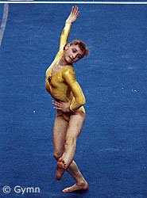

Elena Sazonenkova (USSR/LAT)
1991 University Games AA Champion

|
Medal Total
World Championships: 1 Gold
|
Elena was born on October 22,
1973 in Riga. She began gymnastics at age 6 and trained under coach Yuri Kozyrev. One of Elena's first
big-time competitions was the 1985 Riga International. Competing as a
reserve, she scored 35.625 (8.925 V, 9.40 UB, 8.0 B, and 9.3 FX) -- not bad for
an 11 year old! Today, Elena is involved in sports aerobics. She's
competed internationally in this discipline, and also coaches at a club called
Sportima in Riga.
Competition Results
- 1984
Latvia Cup: 1st AA, 1st UB, 1st B (Candidate for Master of Sport)
Latvian "Trud" Youth Championships: 1st AA (1973 age group)
- 1985
Latvia Cup: 1st AA, 1st UB (Candidate for Master of Sportr)
- 1986
Jr. USSR Championships: 4th AA, 3rd B, 4th FX (Candidate for Master of Sport)
Olsztyn Jr. International:1st AA, 1st UB
Riga International: 11th AA (exhibition)
Riga-Rostock Dual Meet: 1st Team, 2nd AA
"Trud" Youth Championships: 1st AA, 1st B, 2nd FX, 3rd UB, 4th V (Candidate for Master of Sport)
- 1987
Latvian Spartakiade: 1st AA
USSR Cup: 19th AA
- 1988
- FRG-USSR Dual Meet: 1st Team, 2nd AA
- USSR Championships: 7th AA, 5th B, 6th
FX, 8th V
- USSR Cup: 12th AA
-
- 1989
- USA-USSR Dual Meet: 1st Team, 2nd AA
USSR Championships: 8th AA, 3rd FX, 5th B, 8th UB
- USSR Cup: 2nd AA
- World Championships (Stuttgart): 1st Team, 8th AA
(prelims), 6th B
-
- 1990
- Centenary Cup: 2nd AA
- USSR Championships: 1st AA
- USSR Cup: 3rd AA, 2nd UB, 7th V
-
- 1991
- Champions All: 1st AA
- University Games: 3rd Team, 1st AA, 2nd FX
USSR Championships: 20th AA
-
- 1992
- World Championships (Paris): 37th UB (prelims), 56th B
(prelims)
This page was last updated on January 26, 2024.
© Gymn Forum